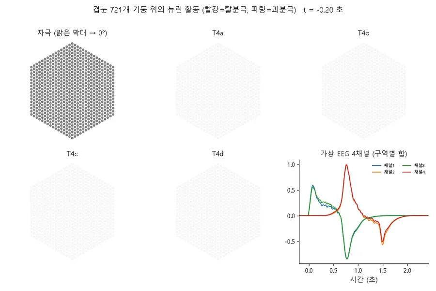
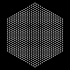

커넥톰 제약 신경망을 이용한
초파리 시각계 신경 활동 예측
Lappalainen et al., Connectome-constrained networks predict neural activity across the fly visual system, Nature 634, 1132–1140 (2024)
논문을 고른 이유
- 초파리 뇌 지도(커넥톰)가 오픈소스로 공개된 것을 봄
- 그 지도로 초파리 뇌에게 게임을 시키는 등 여러 실험이 진행 중이었음
- 관련 논문을 찾다가 Nature에 실린 이 논문을 알게 됨
- 신호처리·머신러닝 수업 내용과 연결되는 부분이 많아 선택
수업 내용과 연결되는 부분
| 수업 개념 | 논문에서 |
|---|---|
| RNN, 활성화 함수 | 뇌 모델 = ReLU를 쓰는 순환 신경망 |
| 역전파, 경사 하강법 | BPTT + Adam으로 학습 |
| CNN, 가중치 공유 | 세포 유형별 파라미터 공유, 육각 CNN 디코더 |
| 과적합 방지 | 적은 파라미터, Dropout, 데이터 증강 |
| 검증, 모델 선택 | 검증 손실로 50개 모델 비교 |
| EEG, 신호처리 | 한계 극복 아이디어(6부) |
배경
커넥톰으로 알 수 있는 것
뉴런 간 연결 여부, 시냅스 개수, 흥분성/억제성
커넥톰으로 알 수 없는 것
뉴런의 반응 속도(시간 상수), 휴지 전위, 실제 연결 세기
→ 이 값들이 없으면 신경 활동 계산 불가
기존 방법
세포 유형마다 전극·칼슘 이미징으로 기록. 작은 세포는 기록이 어려움. 이 모델의 세포 유형 57개 중 ON/OFF 성질이 실험으로 알려진 것은 24개
측정된 세포에만 적용 가능, 새 예측이 어려움
측정 없이 커넥톰과 회로의 기능(과제)만으로 개별 뉴런의 활동을 예측할 수 있는가
기존 방법과 비교
| 측정 데이터에 맞춘 모델 | 과제 기반 딥러닝 예: 물체 인식 CNN과 원숭이 시각피질 비교 | 이 논문 (DMN) | |
|---|---|---|---|
| 학습에 뉴런 측정 데이터 | 필요 | 불필요 | 불필요 |
| 모델 구조 | 연구자가 설계 | 일반 CNN/RNN | 커넥톰 |
| 모델 뉴런과 실제 뉴런 | 일부 대응 | 대응 없음 (집단 수준 비교) | 일대일 대응 (45,669개) |
| 검증 단위 | 맞춘 세포 | 뇌 영역 전체의 표현 | 세포 유형 단위 |
| 측정 안 된 세포 예측 | 어려움 | 불가 | 가능 |
독창성
뉴런 측정 데이터 없이 학습
구조는 커넥톰으로 고정, 나머지 값은 움직임 감지 과제로 학습. 학습 과정에 뉴런 측정 데이터를 쓰지 않음
모델 뉴런과 실제 뉴런의 일대일 대응
모델 뉴런 하나가 특정 세포 유형·위치의 실제 뉴런에 대응. 실험 결과와 세포 단위로 직접 비교 가능
규모
세포 유형 65개(광수용체 포함), 뉴런 45,669개, 연결 1,513,231개. 시각엽 움직임 경로 전체를 하나의 모델로 학습
앙상블을 통한 신뢰도 평가
같은 설정으로 50개 모델 학습. 모델 간 예측이 일치하는지로 예측의 신뢰도 판단
DMN (Deep Mechanistic Network)
| RNN | DMN |
|---|---|
| 은닉 상태 ht | 뉴런 45,669개의 전압 V |
| 순환 가중치 행렬 W | 커넥톰 (희소 행렬, 연결 1,513,231개) |
| 활성화 함수 | ReLU |
| 편향 b | 휴지 전위 Vrest |
| 시간 전개 | dt(학습 시 20 ms) 단위 오일러 적분 |
고정 값과 학습 값
이 모델을 사용한 이유
일반 RNN은 연결마다 가중치를 따로 학습(약 151만 개). DMN은 같은 세포 유형끼리 값을 공유해 734개만 학습. 721개 기둥에 같은 회로가 반복되므로 가능하며, CNN의 가중치 공유와 같은 원리
파라미터 수가 적어 광류 데이터만으로 학습 가능
학습된 값이 세포 유형별 시간 상수 등 생물학적 의미를 가짐
모델 뉴런이 실제 뉴런에 대응해 실험 결과와 직접 비교 가능
움직임 감지는 신호 간 시간 차이가 중요해 시간에 따른 전압 변화를 모델링. ReLU는 일정 전압 이상에서만 신호를 전달하는 시냅스 성질을 단순화한 것
디코더
디코더가 크면 움직임 계산을 디코더가 대신하게 됨. 층 2개, 채널 8개로 제한해 계산을 DMN이 담당하도록 함
겹눈 기둥이 육각 격자이므로 정사각 필터에 육각 마스크 적용
BatchNorm(학습 안정화), Dropout(과적합 방지)
flyvis DecoderGAVP, 사전학습 모델 설정(shape [8, 2], kernel 5, p_dropout 0.5) 기준
학습 파이프라인
| 설정 | 배치 4 | 반복 250,000회 | dt 20 ms | 19프레임 | 잡음 σ 0.08 | 뒤집기·회전 확률 0.5 | 4-fold 분할 |
|---|
파이프라인의 특징
뉴런 정답 없는 지도학습
손실은 광류 오차만 사용. 뉴런 반응에 대한 정답은 주지 않음
학습과 다른 종류의 테스트
학습: 영화 장면 → 광류
평가: 실험실 자극 → 실제 뉴런 반응
검증 손실 기준 선택
같은 설정으로도 모델마다 결과가 다름. 뉴런 데이터 대신 과제 검증 손실로 모델을 선택
평가 방법
학습된 모델에 실험실 자극을 입력하고 세포 유형별 반응을 실제 실험 결과와 비교
| 비교 항목 | 자극 | 실험으로 알려진 세포 유형 |
|---|---|---|
| ON/OFF 극성 밝아질 때 / 어두워질 때 반응 | 깜빡이는 빛 | 24개 ON 10 · OFF 14 |
| 방향 선택성 특정 방향 움직임에만 반응 | 움직이는 가장자리 | 18개 선택적 8 · 비선택적 10 |
| 방향 튜닝 곡선 방향별 반응 크기 | 움직이는 가장자리 12방향 | T4a–d, T5a–d Maisak et al. 2013 |
세포 유형 수: flyvis 공식 코드의 비교용 실측 데이터(groundtruth_utils) 기준
T4/T5 방향 선택성
- T4, T5는 각각 하위 유형 a–d로 나뉘며 하위 유형마다 한 방향(앞→뒤, 뒤→앞, 위, 아래)에 반응 (왼쪽: 실제 측정)
- 광류 과제로만 학습한 모델에서도 T4/T5가 같은 방향 선택성을 보임
- 방향 선택성이 없다고 알려진 10개 유형(Mi1, Tm3 등)은 모델에서도 방향 선택성이 거의 없음
공개 모델(과제 손실 상위 10개) 기준 방향 선택성 지수(DSI) 중앙값: 방향 선택적 유형 0.52, 비선택적 유형 0.02
앙상블과 모델 선택
모델마다 다른 해
같은 설정으로 학습한 50개 모델의 반응이 세포 유형에 따라 다름. 커넥톰과 과제만으로는 일부 값이 하나로 정해지지 않음
UMAP과 군집화
세포 유형별로 50개 모델의 반응을 UMAP으로 차원 축소 후 군집화해 해의 종류를 분석
과제 손실과 실측 일치도
과제 검증 손실이 낮은 모델일수록 실제 측정과 더 일치하는 경향. 뉴런 데이터 없이 과제 성능으로 모델 선택 가능
측정되지 않은 세포에 대한 예측
광수용체를 제외한 세포 유형 57개 기준
- 모델 뉴런이 실제 세포 유형에 대응하므로 아직 기록되지 않은 세포 유형의 반응(ON/OFF, 방향 선택성)도 예측 가능
- 앙상블 모델 간 예측이 일치하는 경우 신뢰도 높음, 엇갈리는 경우 추가 실험 필요
- 실험에서 우선적으로 측정할 대상을 정하는 데 활용 가능
결과 요약
- 학습에 쓰지 않은 실측 결과와 일치
- T4/T5 방향 선택성이 과제 학습만으로 나타남
- 모델마다 해가 달라 앙상블과 과제 성능으로 선택
- 측정되지 않은 세포에 대한 예측 제공
논문의 한계
세포 단위 활동만 다룸
EEG처럼 많은 뉴런이 섞인 신호에서도 같은 정보를 읽어낼 수 있는지는 다루지 않음
해가 하나로 정해지지 않음
같은 설정에서도 모델마다 다른 해. 일부 세포 유형은 커넥톰과 과제만으로 성질이 정해지지 않음
단순한 뉴런 모델
스파이크 없는 점 뉴런, 즉각 전달 시냅스. 수상돌기 계산, 신경조절물질 미반영
단일 과제
광류 예측만으로 학습. 움직임 감지와 관련 없는 세포는 성질이 제대로 정해지지 않을 수 있음
1번에 대한 극복 아이디어
2~4번은 모델 재학습이 필요해 노트북 CPU로는 어려움. 1번은 공개된 학습 모델을 그대로 사용해 머신러닝 기법으로 확인 가능
가상 뇌에서 섞인 신호 디코딩
- 학습된 모델을 고정하고 신경 활동을 기록하는 용도로 사용
- 같은 뇌에서 세포 단위 신호와 EEG처럼 섞인 신호를 만들어 움직임 방향(8방향) 분류 정확도 비교
- 실제 뇌에서는 두 신호를 정답과 함께 동시에 얻기 어려움
| 신호 | 구성 | 대응 |
|---|---|---|
| A · 65채널 | 세포 유형별 전압 평균 | 특정 세포 기록 |
| B · 4채널 | 눈의 4구역별 전체 뉴런 합 | EEG 전극 4개 |
| B · 1채널 | 눈 전체 뉴런 합 | EEG 전극 1개 |
자극 48개(8방향 × 밝기 2 × 속도 3) × 측정 잡음 20회 · 특징: 최고·최저 전압, 최고점 시간, 평균 · 로지스틱 회귀 · 속도 기준 교차검증 · 정규화와 특징 선택은 학습 fold 안에서만

디코딩 결과
- 잡음 1배 정확도: 99.9% / 84.1% / 40.3% (우연 수준 12.5%). 잡음이 클수록 차이 증가
- 특징 선택: 세포 유형 3개로 98.1%. 모든 fold에서 T4a, T5d 선택
- 4채널끼리 비교: 선택한 세포 4개 99.5%, 4구역 84.1%, 무작위 세포 4개 68.6%(중앙값)
- 정답을 섞은 데이터에서 테스트 정답을 보고 특징을 선택하면 22.4% (올바른 방법은 우연 수준 이하)
한계: 시뮬레이션 결과, 단순 합산 EEG, 독립 가우시안 잡음. 세부 그래프는 부록
공개 모델로 T4/T5 결과 재현

flyvis 공개 모델 50개, 공식 튜토리얼 자극, CPU 사용. 과제 손실 1위 모델은 8개 하위 유형 모두 일치(오차 45° 미만). 과제 손실 1–10위 모델 평균 5.1개, 41–50위 평균 2.8개 일치
정리
문제
커넥톰만으로는 뉴런의 동작 값을 알 수 없고, 직접 측정은 어려움
방법
커넥톰으로 구조를 고정한 연속시간 RNN(학습 파라미터 734개)을 광류 과제로 BPTT 학습. 50개 앙상블, 검증 손실로 모델 선택
결과
뉴런 데이터 없이 학습했으나 알려진 세포 성질(ON/OFF, T4/T5 방향 선택성)과 일치. 측정되지 않은 세포에 대한 예측 제공
의의
커넥톰 구조를 귀납적 편향으로 사용한 딥러닝 모델로 신경 활동 예측
감사합니다
Lappalainen, J. K. et al. Connectome-constrained networks predict neural activity across the fly visual system. Nature 634, 1132–1140 (2024).
flyvis (공식 코드, 사전학습 모델 50개): github.com/TuragaLab/flyvis
Maisak, M. S. et al. A directional tuning map of Drosophila elementary motion detectors. Nature 500, 212–216 (2013).
재현 및 추가 실험 코드: github.com/JsonParc/ML_project
이후 슬라이드: 질문 대비 부록
겹눈 위 신경 활동

- 밝은 막대가 0°(오른쪽) 방향으로 이동할 때 721개 기둥의 T4 활동
- 막대 위치를 따라 순차적으로 반응, 0° 선호 유형인 T4b의 반응이 가장 큼
- 오른쪽 아래: 4구역 합산 신호(가상 EEG)
재현: 과제 손실과 일치도
순위 상관 ρ = −0.32. 일치 기준: 선호 방향 오차 45° 미만
가상 EEG 4채널 신호와 혼동 행렬

잡음 1배 기준. B4는 대각선 방향(45°, 135°, 315°) 정확도가 높고 0°, 180°, 270°에서 혼동이 많음. 수평·수직 막대는 두 구역을 동시에 지나 구역 간 시간 차가 줄어들기 때문
특징 선택 (순차 전진 선택)
잡음 1배, 선택은 각 fold의 학습 데이터 안에서 안쪽 교차검증으로 수행
fold별 선택 순서
채널 수를 맞춘 비교
| 4채널 신호 (잡음 1배) | 정확도 |
|---|---|
| 특징 선택으로 고른 세포 유형 4개 | 99.5% |
| 가상 EEG 4채널 | 84.1% |
| 무작위 세포 유형 4개 (200회 중앙값) | 68.6% |
특징과 분류기 비교
시간 영역 특징 vs PSD
분류기 (C, k는 안쪽 교차검증으로 선택)
데이터 누수 확인
48개 조건의 방향 정답을 무작위로 섞은 데이터. 신호와 정답이 무관하므로 정상적인 정확도는 우연 수준(12.5%)
검증 방법별 정확도 (가상 EEG 4채널, 실제 정답)
| 속도 기준 fold | 84.1% |
| 전체 데이터로 정규화 | 84.2% |
| 무작위 5-fold (반복 측정 섞임) | 85.5% |